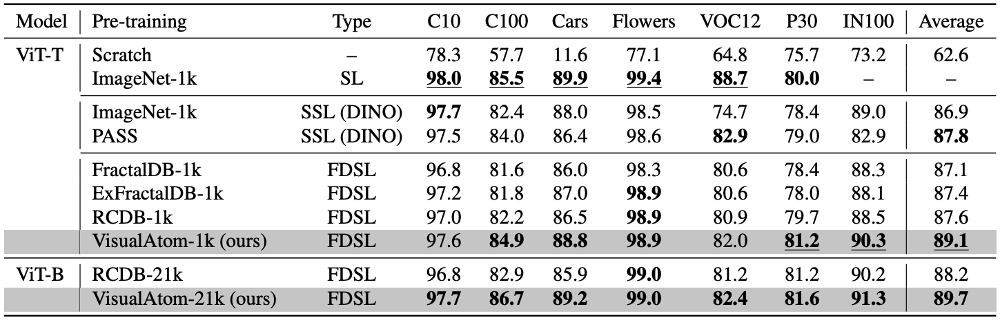

Formula-driven supervised learning (FDSL) has been shown to be an effective method for pre-training vision transformers, where ExFractalDB-21k was shown to exceed the pre-training effect of ImageNet-21k. These studies also indicate that contours mattered more than textures when pre-training vision transformers. However, the lack of a systematic investigation as to why these contour-oriented synthetic datasets can achieve the same accuracy as real datasets leaves much room for skepticism. In the present work, we develop a novel methodology based on circular harmonics for systematically investigating the design space of contour-oriented synthetic datasets. This allows us to efficiently search the optimal range of FDSL parameters and maximize the variety of synthetic images in the dataset, which we found to be a critical factor. When the resulting new dataset VisualAtom-21k is used for pre-training ViT-Base, the top-1 accuracy reached 83.7% when fine-tuning on ImageNet-1k. This is only 0.5% difference from the top-1 accuracy (84.2%) achieved by the JFT-300M pre-training, even though the scale of images is 1/14. Unlike JFT-300M which is a static dataset, the quality of synthetic datasets will continue to improve, and the current work is a testament to this possibility. FDSL is also free of the common issues associated with real images, e.g. privacy/copyright issues, labeling costs/errors, and ethical biases.
Hypothes
To enhance the performance of FDSL, we test the following hypothes:
Hypothes: The Variation of Object Contours is what matter in FDSL datasets
Related works about FDSL have shown that the pre-training ViT focuses on the object contours of images
We proposed a new FDSL dataset – VisualAtom with sinusoidal waves for improving the design variation of contours
Brought variety to the contours, VisualAtom outperformed latest SoTA FDSL datasets (e.g., RCDB and ExFractalDB)
Samples images from our VisualAtom dataset
Comparison: Fine-tuning on ImageNet, CIFAR, Cars, Other datasets
We found that vision transformers (ViT) can have higher pre-training effect if pre-trained on the dataset which has the rich variation of contour shapes among categories.
We also found that our proposed VisualAtom outperforms all existing FDSL and some SL/SSL methods in classification tasks using real images (such as fine-tuning on ImageNet-1k).
Comparison of pre-training methods. Best and second-best scores at ViT-Tiny are shown in underlined bold and bold, respectively.
At ViT-Base, best scores are shown in bold.

Comparison with fine-tuning accuracy on ImageNet1k. Res. indicates the image resolution at fine-tuning.
Best and second-best scores at each resolution and model scale are shown in underlined bold and bold, respectively.
* Since the JFT-300M, which is not available, cannot be compared with the same setting, we transcribe the accuracy with the different setting reported in the previous work.
Systematically Investigate the Design Space of Contour-Oriented Synthetic Dataset
In order to find out the factors that improve the pre-training effect, we conducted an systematically investigation for image contour elements using VisualAtom. The following figures show the fine-tuning accuracies of varying the range of (A) frequency, (B) amplitude, and (C) quantization parameter of the contours which compose VisualAtom. Here, the frequency controls the outline shape, the amplitude controls the size of shape, and the quantization parameter controls the smoothness.
According to this investigation, we found that variety of contour shapes in the pre-training dataset is a crucial factor for achieving a superior pre-training effect.
(left) : (A) Fine-tuning accuracy when varying the range of frequency parameters n1, n2. (middle) : (B) Fine-tuning accuracy when varying the range of number of orbits K. (right) : (C) Fine-tuning accuracy when varying the range of quantization parameter q.
Citation
@InProceedings{takashima2023visual,
author = {Takashima, Sora and Hayamizu, Ryo and Inoue, Nakamasa and Kataoka, Hirokatsu and Yokota, Rio},
title = {Visual Atoms: Pre-training Vision Transformers with Sinusoidal Waves},
booktitle = {Proceedings of the IEEE/CVF Conference on Computer Vision and Pattern Recognition (CVPR)},
month = {June},
year = {2023},
pages = {18579-18588}
}
VisualATom-1k (1k categories x 1k instances; Total 1M images).
Please see [GitHub] for the rendering code.
Please see [zenodo] for the raw dataset.
Acknowledgement
This work is based on results obtained from a project, JPNP20006, commissioned by the New Energy and Industrial Technology Development Organization (NEDO).
Computational resource of AI Bridging Cloud Infrastructure (ABCI) provided by National Institute of Advanced Industrial Science and Technology (AIST) was used.
{kind=link}